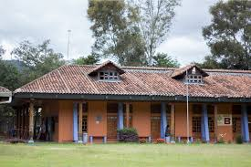

COLEGIO DE LA FRONTERA DEL SU (ECOSUR)

ECOSUR tiene por objeto realizar y fomentar actividades de investigación científica básica y aplicada en materias que incidan en el desarrollo y la vinculación de México en su frontera sur, dando especial relevancia a su problemática ambiental, económica, productiva y social, así como desarrollar tecnologías y diseñar estrategias que contribuyan al bienestar social, a la conservación de la biodiversidad, al uso racional, eficiente y sostenido de los recursos naturales, y en general al desarrollo sustentable.
Historia
ECOSUR fue creado en octubre de 1994 al transformarse el Centro de Investigaciones Ecológicas del Sureste (CIES)2 con dos sedes: San Cristóbal de Las Casas y Tapachula, ambas en Chiapas con una planta de 49 investigadores. En 1995 el Centro de Investigaciones de Quintana Roo (CIQRO) transfirió sus programas de investigación a ECOSUR estableciendo la unidad de investigación en el estado. En 1995 se fundó la Unidad Villahermosa y en 1996 la Unidad Campeche, consolidándose con ello la presencia de ECOSUR en los cuatro estados de la frontera sur de México.
La historia de ECOSUR se puede dividir en tres períodos: el primero (1994-1998) caracterizado por la creación del programa institucional y un crecimiento rápido; el segundo (1998-2004) por la serie de acciones realizadas para consolidar la investigación, la formación de recursos humanos y la vinculación, así como para fortalecer la infraestructura y los servicios de apoyo; y el tercero (2005-2010) caracterizado por una elevada producción académica obtenida por una plantilla de personal científico madura, que se ha insertado en las redes nacionales e internacionales de generación de conocimiento de sus respectivos programas de investigación.
Objetivos
ECOSUR busca contribuir al desarrollo sustentable de la frontera sur de México, Centroamérica y el Caribe a través de la generación de conocimientos, la formación de recursos humanos y la vinculación desde las ciencias sociales y naturales.